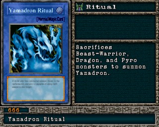

#666 · Ritual
Yamadron Ritual
CategoriaRitual
Senha29089635
Star Chips10
Quem dropa no Mod 13
| Duelista | Rank | Chance | Média | |
|---|---|---|---|---|
| S/A-TEC | 3,12% 64/2048 | 1 em 32 duelos | ||
| S/A-TEC | 1,95% 40/2048 | 1 em 51 duelos | ||
| S/A-TEC | 1,95% 40/2048 | 1 em 51 duelos | ||
| S/A-TEC | 1,81% 37/2048 | 1 em 55 duelos | ||
| S/A-TEC | 1,56% 32/2048 | 1 em 64 duelos | ||
| S/A-TEC | 1,56% 32/2048 | 1 em 64 duelos | ||
| S/A-TEC | 1,17% 24/2048 | 1 em 85 duelos | ||
| S/A-TEC | 1,17% 24/2048 | 1 em 85 duelos | ||
| S/A-TEC | 0,88% 18/2048 | 1 em 114 duelos | ||
| S/A-TEC | 0,59% 12/2048 | 1 em 171 duelos | ||
| S/A-TEC | 0,39% 8/2048 | 1 em 256 duelos | ||
| S/A-TEC | 0,39% 8/2048 | 1 em 256 duelos |
Quem dropa no jogo original
| Duelista | Rank | Chance | Média | |
|---|---|---|---|---|
| S/A-TEC | 3,61% 74/2048 | 1 em 28 duelos | ||
| S/A-TEC | 3,12% 64/2048 | 1 em 32 duelos | ||
| S/A-TEC | 1,95% 40/2048 | 1 em 51 duelos | ||
| S/A-TEC | 1,95% 40/2048 | 1 em 51 duelos | ||
| S/A-TEC | 1,56% 32/2048 | 1 em 64 duelos | ||
| S/A-TEC | 1,56% 32/2048 | 1 em 64 duelos | ||
| S/A-TEC | 1,17% 24/2048 | 1 em 85 duelos | ||
| S/A-TEC | 1,17% 24/2048 | 1 em 85 duelos | ||
| S/A-TEC | 0,88% 18/2048 | 1 em 114 duelos | ||
| S/A-TEC | 0,59% 12/2048 | 1 em 171 duelos | ||
| S/A-TEC | 0,39% 8/2048 | 1 em 256 duelos | ||
| S/A-TEC | 0,39% 8/2048 | 1 em 256 duelos |
A chance vale por duelo vencido com o rank indicado. "1 em N" é a média de duelos para conseguir a carta. S/A-POW = vitória por força; S/A-TEC = vitória técnica; B/C/D = ranks baixos.